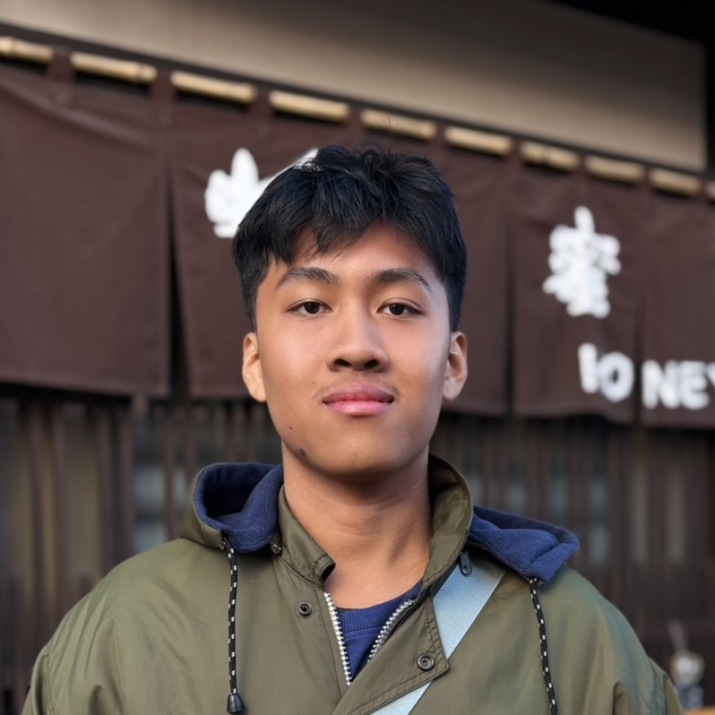

2nd
Dec 2023
Everest Taekwondo Championship 2 (Kemenpora RI Cup)
Silver Medal, Kyorugi Junior Putra U 77 KG · GOR POPKI Cibubur, Jakarta.
Issued by Ministry of Youth and Sports of the Republic of Indonesia & Pengprov TI DKI Jakarta.

Informatics Student · Telkom University
I focus on UI/UX Design (Figma)
Bandung, West Java, Indonesia
I am an undergraduate Informatics student at Telkom University passionate about bridging the gap between data-driven insights and user-centered digital solutions.
My core focus lies in UI/UX Design (Figma) and Data Analytics, leveraging analytical thinking to understand user behaviors and craft intuitive, impactful interface designs.
Alongside my design and data focus, I have a strong foundation in software engineering, database optimization, and web development gained through academic coursework, bootcamps, and developer community activities. I thrive on solving complex problems, building clean design systems, and turning raw data into meaningful product decisions.
Used in projects, coursework, or leadership roles.
Currently building up through courses and bootcamps.
Co-developed “EventHub”, a web-based event and participant management system built with Spring Boot, MySQL, and OOP architecture as a major Object-Oriented Programming coursework project.
Team project with Luthfie, Muhammad Abian, and 2 others · Telkom University
“Mengidentifikasi Dampak Bullying Terhadap Prestasi Akademis Mahasiswa Telkom University”. Co-authored a mixed-methods academic research paper examining the impact of bullying on student mental health and academic performance at Telkom University.
Informatics · GPA 3.26 / 4.00
Focused on Software Engineering, Data Analytics, and UI/UX Design.
Member
Natural Sciences (IPA)
Class President (Head of Class 12 MIPA 4), academic year 2023/2024.
EPrT (English Proficiency Test): 453Telkom University Language Center · Listening 48, Grammar 44, Reading 44
Dec 2023
Silver Medal, Kyorugi Junior Putra U 77 KG · GOR POPKI Cibubur, Jakarta.
Issued by Ministry of Youth and Sports of the Republic of Indonesia & Pengprov TI DKI Jakarta.
Mar 2023
Gold Medal, Kyorugi Junior · GOR Ciracas, East Jakarta, March 17–19, 2023.
Issued by Acting Governor of DKI Jakarta & MGMP PJOK SMP DKI Jakarta.
Open to collaboration, or just say hi.
adsanu2@gmail.com